Lamp Illumination Of MIL And SVS (Maintenance Indicator Lamp, Service Vehicle Soon), T8
Lamp Illumination Of MIL And SVS (Maintenance Indicator Lamp, Service Vehicle Soon), T8
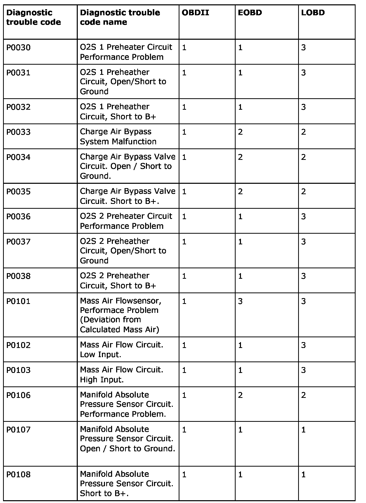
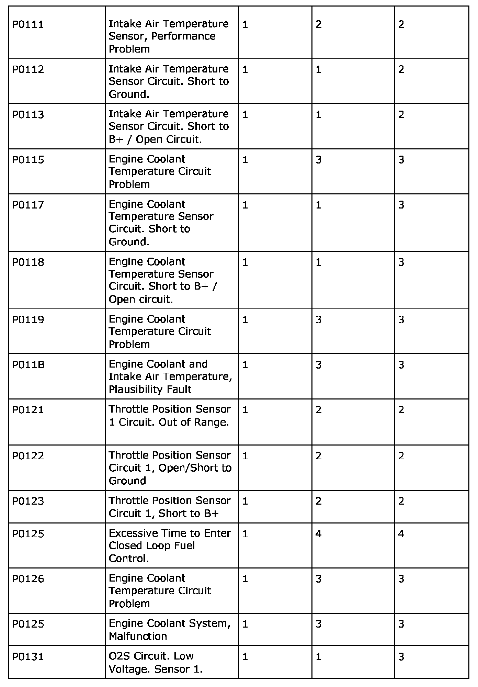
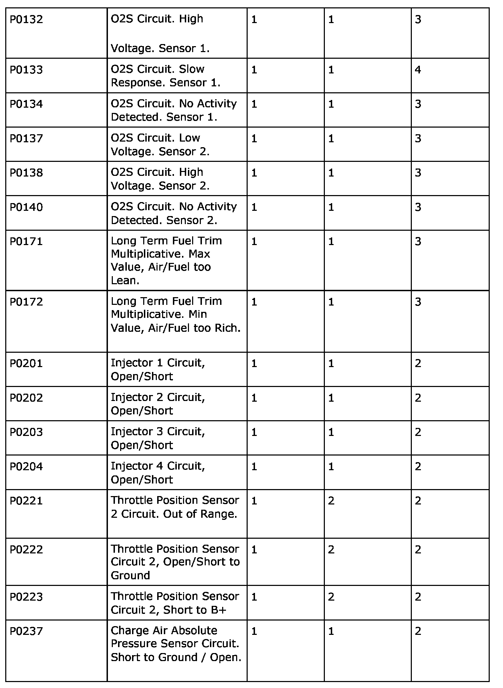
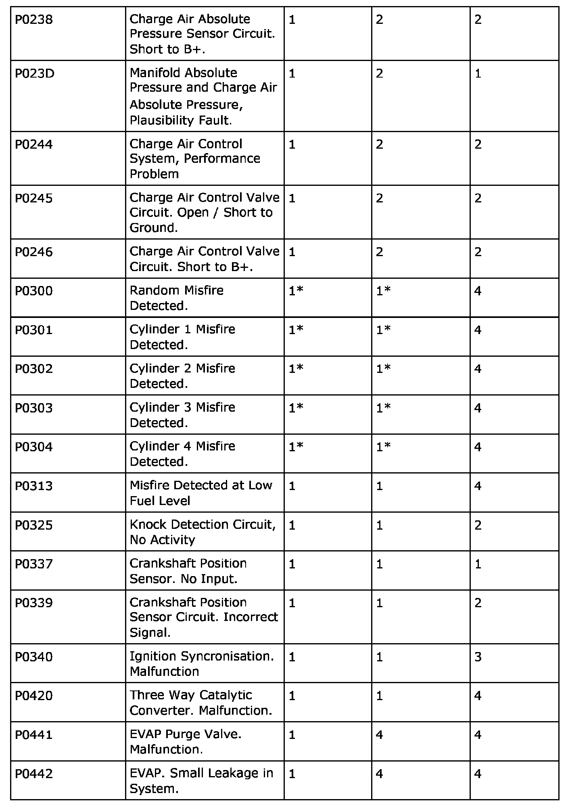
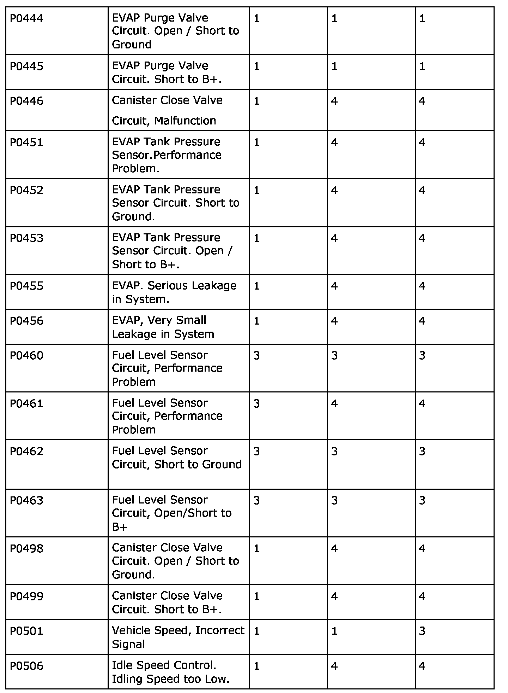
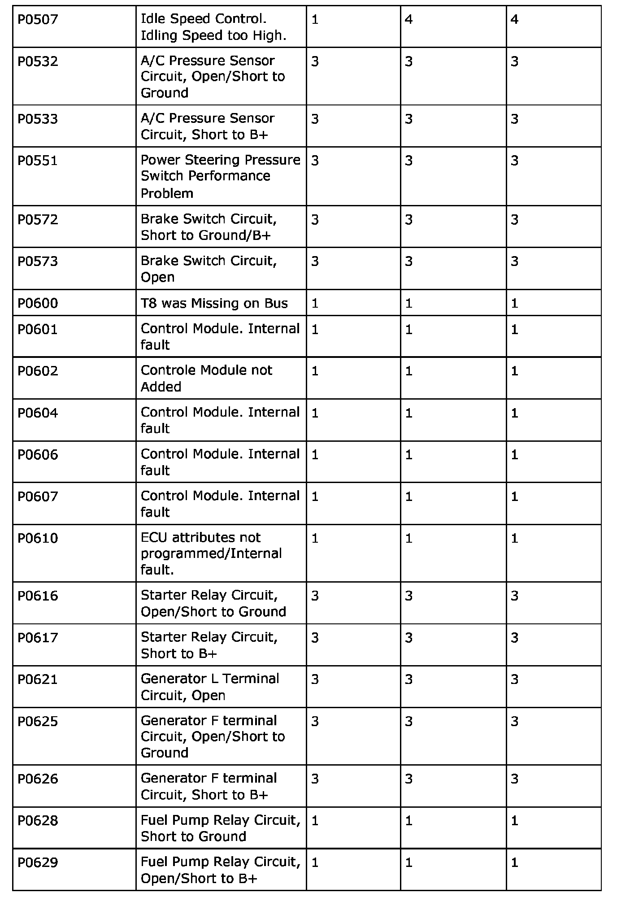
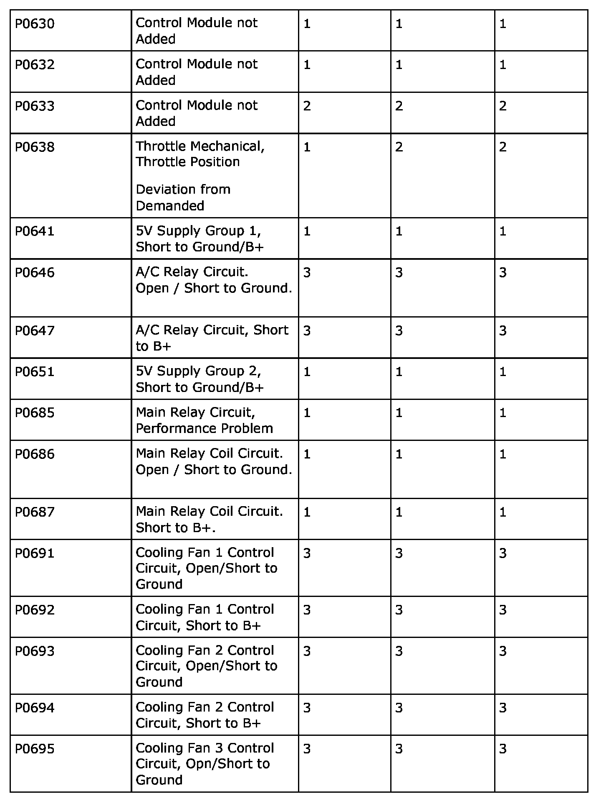
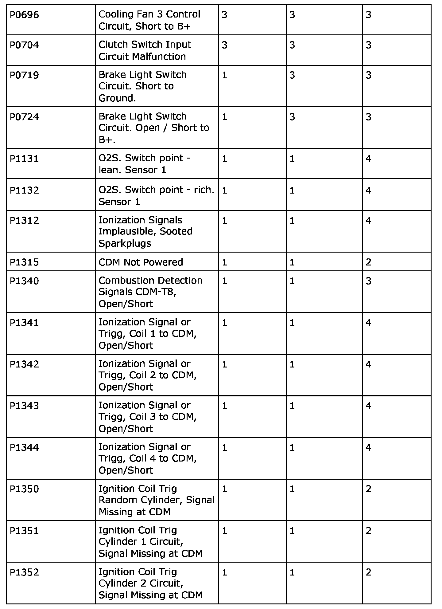
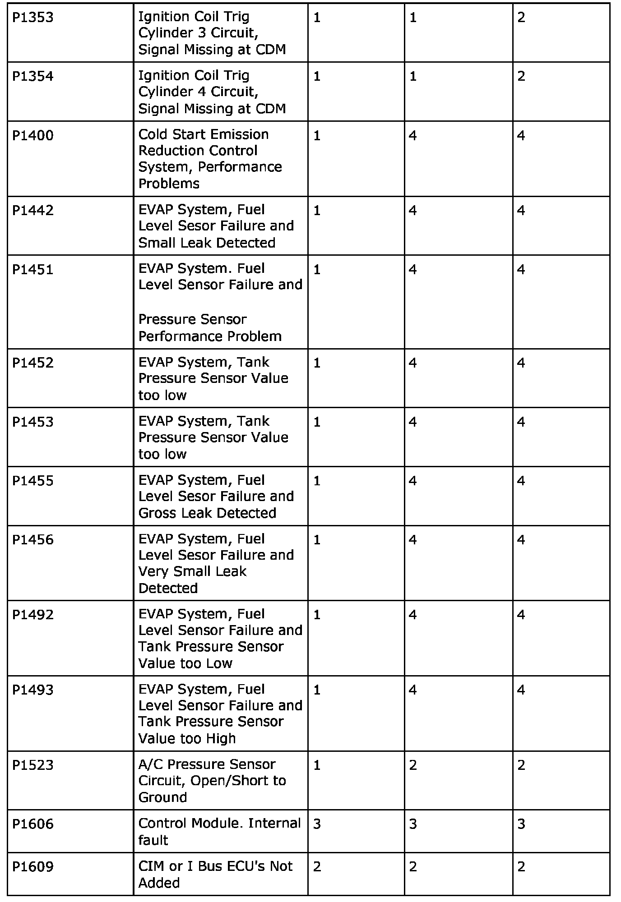
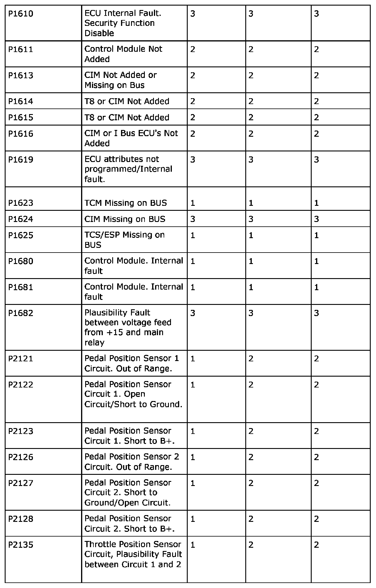
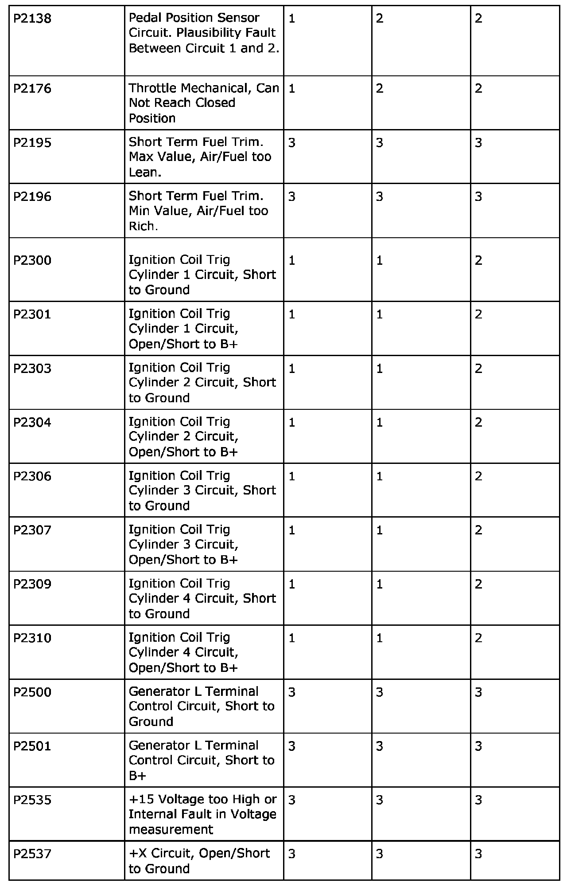
Type of lamp illumination
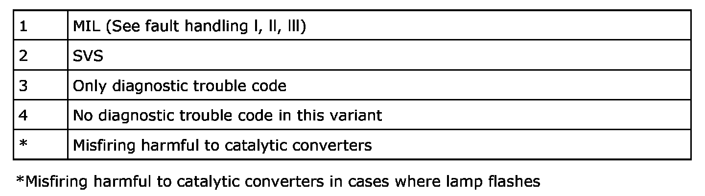